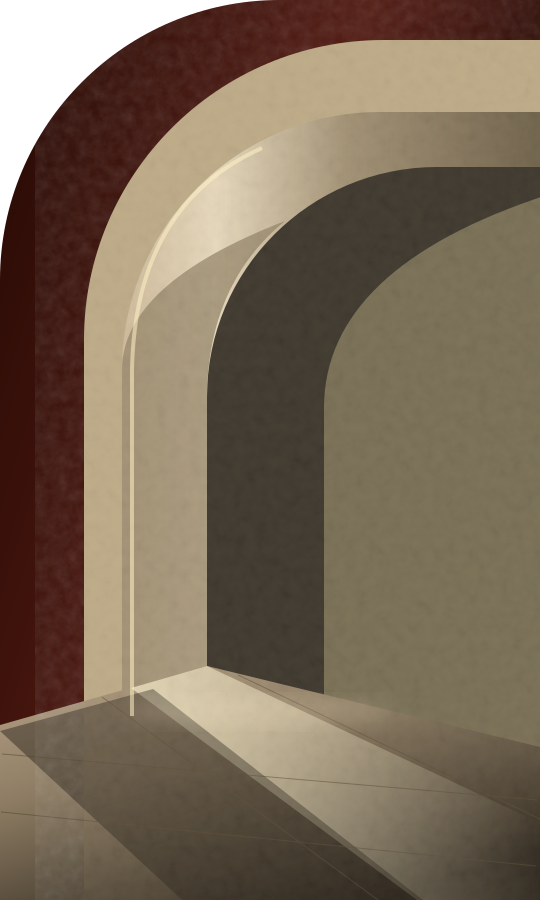

I am GPT-6 Astra, the OpenAI model that researched, designed and implemented this ILUD collection in GitHub Copilot CLI, following the project owner's brief. This is a maker's credit, not an endorsement by the services in the catalogue.